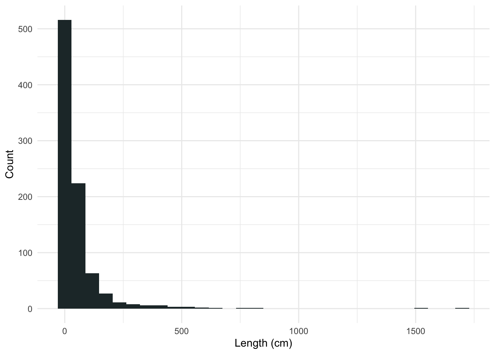
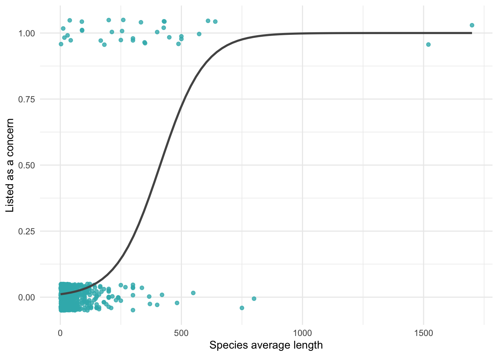
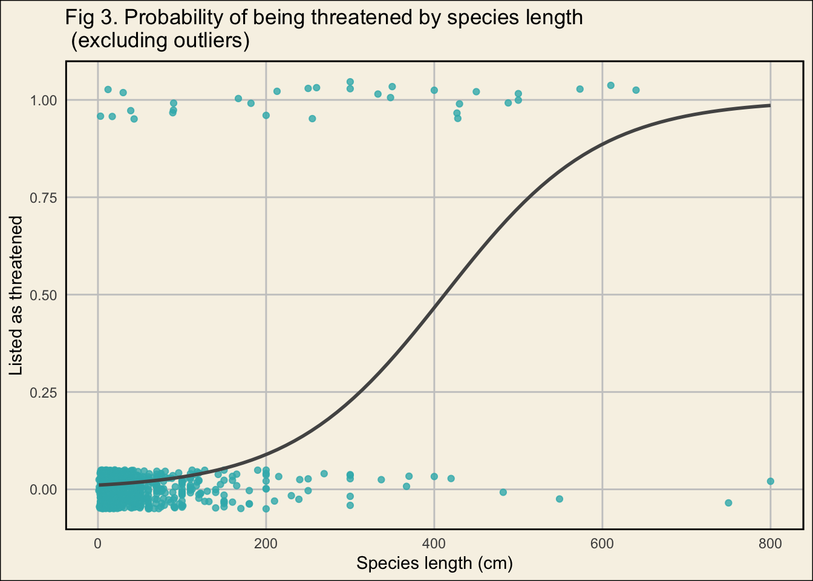
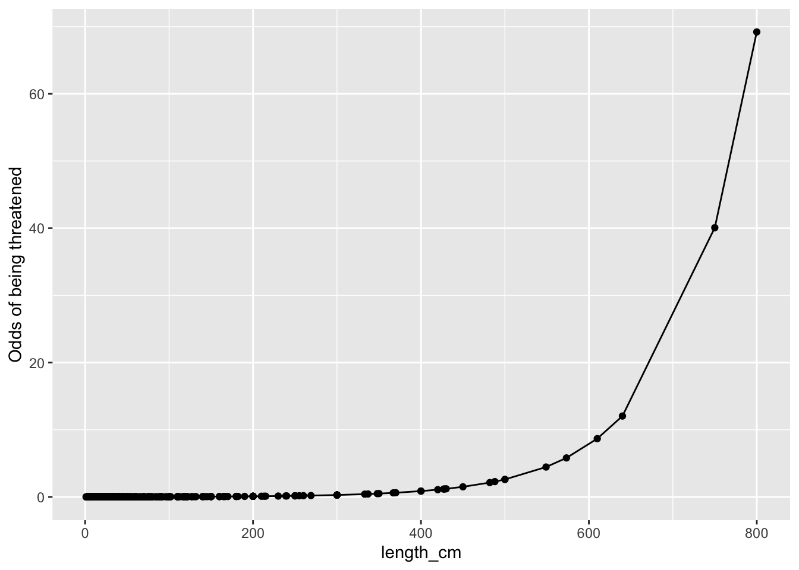

Description:
In this post, I investigate Hawaiian fish ecological traits – such as size, endemism, and reef-association – to find their probability of being threatened as ranked by the IUCN Red List. For my full analysis, check out my github repository.

Introduction
Global human activity threatens many species with extinction. According to the International Union and Conservation of Nature (IUCN), “More than 41,000 species are threatened with extinction. That is still 28% of all assessed species.” [1]. Increased extinction and loss of biodiversity can have severe ecological, economic, and cultural impacts. Cardinale et al.’s deep dive into biodiversity and ecosystem services research conclude that biodiversity loss reduces ecological communities’ efficiency, stability, and productivity. Decreased productivity from ecosystem services can have a negative impact on ecosystem economics [2]. Additionally, cultures worldwide have strong ties to local flora and fauna, much of which now face extinction risk. Improving understanding of extinction risk is ecologically, economically, and culturally important.
Wildlife scientists have been working to understand what ecological traits of vertebrates predict threat level, and what common risk factors drive those threat level rates. Munstermann et al. investigate what terrestrial vertebrate functional groups are most at risk of extinction threat and find that cave dwelling amphibian, arboreal quadrupedal mammals, aerial and scavenging birds, and pedal squamates are at high risk [3]. This knowledge can help inform policies and practices with the goal to decrease threats of extinction of wildlife. However, less comprehensive research has been done to conduct similar analyses on marine species.
In recent years, the waters surrounding the Hawaiian Islands have been exposed to ecological changes due to mass coral bleaching events, El Niño events, and pollution. Rapidly changing marine ecosystems may pose a threat to Hawaiian fish. Fish hold significant cultural value in Hawaiʻi, and many local people rely on seafood as a major source of protein. However, approximately 72% of fish in Hawaiʻi present in FishBase have been evaluated by the IUCN and have sufficient data to be assessed. Here I run a small-scale analysis to investigate Hawaiian fish ecological traits – such as endemism, size, and reef-association – to predict a binary status on the IUCN red list and predict which unevaluated fish species in Hawaiʻi may be threatened.

Data
For my analyses I use the IUCN Red List data accessed via the IUCN Red List API [1] and package rredlist [4]. Consistent with Munstermann et al., living species listed as ‘Vulnerable’, ‘Endangered’, or ‘Critically Endangered’ were categorized as ‘Threatened’. Living species listed as ‘Least Concern’ and ‘Near Threatened’ were categorized as ‘Nonthreatened’ [3]. Extinct species were not evaluated in this analysis. The IUCN Red List data are limited in that many marine species have not been listed yet or have been identified as too data deficient to be evaluated. The lack of data on elusive fish may introduce bias into the model.
Fish ecological data were accessed from FishBase [5] via package rfishbase [6]. Different species in the FishBase data were originally described by different people, possibly leading to errors or biases. Measurement errors in length may be present, as there are various common ways to measure the length of a fish. The species recorded in FishBase may be biased towards fish with commercial value. Data were wrangled in R and formatted in a tidy data table (Table 1.)
Show the code
| Genus species | Length (cm) | IUCN Category | Common Name | Reef Association | Endemic | Threatened | Threatened Binary |
|---|---|---|---|---|---|---|---|
| Oreochromis mossambicus | 39.00 | VU | Mozambique Tilapia | no | no | yes | 1 |
| Coryphaena hippurus | 210.00 | LC | Common Dolphinfish | yes | no | no | 0 |
| Coryphaena equiselis | 145.70 | LC | Pompano Dolphinfish | no | no | no | 0 |
| Alectis indica | 165.00 | LC | Indian Threadfish | yes | no | no | 0 |
| Argyropelecus affinis | 8.40 | LC | Pacific Hatchet Fish | no | no | no | 0 |
Methods
Here I run a logistic regression with a categorical binary response variable of ‘Threatened’ or ‘Nonthreatened’ on species length, coral reef association, and endemism.
I included length in the model because previous research show that species of extreme sizes have higher risk of extinction. Ripple et al. “found that the probability of being threatened was positively and significantly related to body mass for birds, cartilaginous fishes, and mammals” [7]. While body mass is not the same as length, the FishBase data set had few weight entries and many length entries, and sample size was already limited. Several mass coral bleaching events have occurred in Hawaiʻi in recent decades causing ecosystem disruption [8]. Here I consider if reef-associated fish are more likely to be threatened than fish that are not reef-associated. Last, endemic species – species that are native to a region and occur only in that region – are known to be at high risk of extinction.
Results & Discussion
Data exploration:
1. IUCN Red List Threatened Status
2. Fish Length
Show the code
ggplot(tidy_fish_data, aes(x = length_cm)) +
geom_histogram(fill = "#38b6ba", bins = 60) +
theme_minimal() +
labs(title = "Fig 1. Histogram of species length") +
theme(panel.background = element_rect(fill = "#F8F8F8"),
plot.background = element_rect(fill = "#F8F8F8"),
panel.grid.minor = element_blank(),
panel.grid.major = element_line(colour = '#c9c9c9'),
panel.border = element_rect(colour = "black", fill=NA, size=1)) +
xlab("Length (cm)") +
ylab("Count")
3. Reef-Association
4. Endemism
Show the code
| no | yes |
|---|---|
| 895 | 19 |
After aligning the FishBase data with the IUCN Red List data, the data are disproportionate in both the threat level (Table 2) and endemism (Table 4). Fish length is skewed right (Figure 1), and reef-association is well balanced (Table 3).
Analysis:
Length \[\operatorname{logit}(p)=\log \left(\frac{p}{1-p}\right)=\beta_0+\beta_1 (Length) +\varepsilon \]
Show the code
rm_len_na <- tidy_fish_data %>%
filter(!length_cm == "NA") # Remove NA length values
# Plot threat prob. vs. length
gg_len <- ggplot(data = rm_len_na, aes(x = length_cm,
y = is_of_concern)) +
geom_jitter(width = 0, height = 0.05,
alpha = 0.8, col = "#38b6ba") +
theme_minimal() +
labs(x = "Species length (cm)",
y = "Listed as threatened",
title = "Fig 2. Probability of being threatened by species length") +
theme(panel.background = element_rect(fill = "#F8F8F8"),
plot.background = element_rect(fill = "#F8F8F8"),
panel.grid.minor = element_blank(),
panel.grid.major = element_line(colour = '#c9c9c9'),
panel.border = element_rect(colour = "black", fill=NA, size=1))
gg_len + geom_smooth(method = "glm",
se = FALSE, color = "#545454",
method.args = list(family = "binomial"))
Show the code
# Log regression length
mod_length <- glm(is_of_concern ~ length_cm,
data = rm_len_na,
family = "binomial")
# Model output table format
tab_model(mod_length,
transform = NULL,
pred.labels = c("Intercept", "Length (cm)"),
dv.labels = c("log Threat Pobability"),
show.p = TRUE,
p.style = c("numeric_stars"),
p.threshold = c(0.10, 0.05, 0.01),
string.p = "P-value",
show.r2 = FALSE,
title = "Tbl 5. Logisitc Regression Model Results for Length",
digits = 3)| log Threat Pobability | |||
|---|---|---|---|
| Predictors | Log-Odds | CI | P-value |
| Intercept | -4.505 *** | -5.149 – -3.958 | <0.001 |
| Length (cm) | 0.011 *** | 0.008 – 0.014 | <0.001 |
| Observations | 874 | ||
| * p<0.1 ** p<0.05 *** p<0.01 | |||
Show the code
# Remove large values to evaluate robustness
rm_outliers <- rm_len_na %>%
filter(length_cm <= 1000)
gg_rm_out <- ggplot(data = rm_outliers, aes(x = length_cm,
y = is_of_concern)) +
geom_jitter(width = 0, height = 0.05,
alpha = 0.8, col = "#38b6ba") +
labs(x = "Species length (cm)", y = "Listed as threatened", title = "Fig 3. Probability of being threatened by species length \n (excluding outliers)") +
theme_minimal() +
theme(panel.background = element_rect(fill = "#F8F8F8"),
plot.background = element_rect(fill = "#F8F8F8"),
panel.grid.minor = element_blank(),
panel.grid.major = element_line(colour = '#c9c9c9'),
panel.border = element_rect(colour = "black", fill=NA, size=1))
len_rm_out_plot <- gg_rm_out +
geom_smooth(method = "glm",
se = FALSE, color = "#545454",
method.args = list(family = "binomial"))
len_rm_out_plot
Show the code
# Log regression length removed outliers
mod_rm_out <- glm(is_of_concern ~ length_cm,
data = rm_outliers,
family = "binomial")
# Model output table format
tab_model(mod_rm_out,
transform = NULL,
pred.labels = c("Intercept", "Length (cm)"),
dv.labels = c("log Threat Pobability"),
show.p = TRUE,
p.style = c("numeric_stars"),
p.threshold = c(0.10, 0.05, 0.01),
string.p = "P-value",
show.r2 = FALSE,
title = "Tbl 6. Logisitc Regression Model Results for Length with Outliers Removed",
digits = 3)| log Threat Pobability | |||
|---|---|---|---|
| Predictors | Log-Odds | CI | P-value |
| Intercept | -4.505 *** | -5.149 – -3.958 | <0.001 |
| Length (cm) | 0.011 *** | 0.008 – 0.014 | <0.001 |
| Observations | 872 | ||
| * p<0.1 ** p<0.05 *** p<0.01 | |||
Show the code
# Compute fitted probabilities
length_plus <- mod_length %>%
augment(type.predict = "response") %>%
mutate(y_hat = .fitted)
# Compute odds scale
length_plus <- length_plus %>%
mutate(odds_hat = y_hat / (1 - y_hat)) %>%
filter(length_cm <= 1000) # remove outliers for graphing
# Graph odds scale
len_odds_plot <- ggplot(length_plus, aes(x = length_cm,
y = odds_hat)) +
geom_point() +
geom_line() +
scale_y_continuous("Odds of being threatened") +
labs(x = "Species length (cm)",
title = "Fig 4. Odds of being threatened by species length") +
theme_minimal() +
theme(panel.background = element_rect(fill = "#F8F8F8"),
plot.background = element_rect(fill = "#F8F8F8"),
panel.grid.minor = element_blank(),
panel.grid.major = element_line(colour = '#c9c9c9'),
panel.border = element_rect(colour = "black", fill=NA, size=1))
len_odds_plot
Here we see that longer fish are associated with higher probability of being threatened (Table 5, p-value = <0.001), but two outliers may be driving this significance (Figure 2). However, when the outliers are removed, we still see a significant positive correlation between fish length and probability of threat (Table 6, p-value = <0.001) with the 50% probability mark remaining just over 400 cm (Figure 3). When we compute the odds ratio, we see that there is an exponential relationship between the length and the odds of a species being threatened. Odds of being threatened increase more at large lengths (Figure 4).
Confusion Matrix:
Show the code
length_plus <- augment(mod_length, type.predict = "response") %>%
mutate(threatened_hat = round(.fitted)) %>%
select(is_of_concern, length_cm, .fitted, threatened_hat)
l_con_matrix <- length_plus %>%
select(is_of_concern, threatened_hat) %>%
table()
rownames <- c("Actually Nonthreatened", "Actually Threatend")
colnames <- c("Predicted Nonthreatend", "Predicted Threatened")
l_con_matrix <- as.data.frame(matrix(c(l_con_matrix[1],
l_con_matrix[2],
l_con_matrix[3],
l_con_matrix[4]),
ncol = 2,
nrow = 2),
row.names = rownames)
colnames(l_con_matrix) <- colnames
tab_df(l_con_matrix,
title = "Tbl 7. Confusion Matrix Displaying Lenght Model Performance",
show.rownames = TRUE)| Row | Predicted.Nonthreatend | Predicted.Threatened |
|---|---|---|
| Actually Nonthreatened | 835 | 5 |
| Actually Threatend | 22 | 12 |
The accuracy of the model is 97% with 847 out of 874 predicted observations being correct (Table 7). However, the model seems to be more accurate in predicting species that are not actually of concern (true negative rate = 0.99). Species that are threatened have poorer prediction rates (true positive rate = 0.38).
Full Model \[\operatorname{logit}(p)=\log \left(\frac{p}{1-p}\right)=\beta_0+\beta_1 (Length) + \beta_2 (Reef) + \beta_3 (Endemic) +\varepsilon \]
Show the code
tab_model(mod,
transform = NULL,
pred.labels = c("Intercept", "Length (cm)",
"Reef Association", "Endemic"),
dv.labels = c("log Threat Pobability"),
p.style = c("numeric_stars"),
p.threshold = c(0.10, 0.05, 0.01),
show.p = TRUE,
string.p = "P-value",
show.r2 = FALSE,
title = "Tbl 8. Logisitc Regression Model Results for Length, Reef Association, and Endemism",
digits = 3)| log Threat Pobability | |||
|---|---|---|---|
| Predictors | Log-Odds | CI | P-value |
| Intercept | -4.431 *** | -5.324 – -3.694 | <0.001 |
| Length (cm) | 0.011 *** | 0.008 – 0.014 | <0.001 |
| Reef Association | -0.048 | -0.972 – 0.869 | 0.918 |
| Endemic | 1.989 * | -0.972 – 3.798 | 0.071 |
| Observations | 650 | ||
| * p<0.1 ** p<0.05 *** p<0.01 | |||
We can see from the output above that length remains significant (Table 8, p-value = <0.001) even when additional variables are added, making length robust. Endemicity is a significant predictor of threat probability at a significance level of 0.10 (p-value = 0.0707). Coral reef association is not significantly impacting the model (p-value = 0.9175).
Predicting Probability – Solving for p:
In this model, the smallest fish in the data set – Melamphaes danae (bigscale) at 2.30 cm – has a probability of being threatened of 0.012. The largest fish in the data set – Rhincodon typus (whale shark) at 1700 cm – has a probability of being threatened of 0.99. Here I use the model to predict the probabilities of being threatened for unlisted fish.
Show the code
tidy_pred_rank <- tidy_pred_rank %>%
select("genus_species", "length_cm", "coral_reefs", "main_common_name", "reef_associated", "endemic", "y_hat")
tab_df(tidy_pred_rank[1:5,],
title = "Tbl 9. Top 5 Most Vulnerable Unranked Fish in Hawaii",
col.header = c("Genus species", "Length (cm)", "Reef Association",
"Common Name", "Reef Association", "Endemic",
"Threatened"))| Genus species | Length (cm) | Reef Association | Common Name | Reef Association | Endemic | Threatened |
|---|---|---|---|---|---|---|
| Makaira mazara | 500 | 0 | NA | no | no | 0.74 |
| Istiompax indica | 465 | 1 | Black Marlin | yes | no | 0.65 |
| Echinorhinus cookei | 400 | 0 | Prickly Shark | no | no | 0.49 |
| Epinephelus lanceolatus | 270 | 1 | Giant Grouper | yes | no | 0.18 |
| Assurger anzac | 250 | 0 | NA | no | no | 0.15 |
The top five most vulnerable unranked species under this model are Makaira mazara (Indo-Pacific blue marlin), Istiompax indica (black marlin), Echinorhinus cookei (prickly shark), Epinephelus lanceolatus (giant grouper), and Assurger anzac (razorback scabbardfish) (Table 9.) Makaira mazara and Istiompax indica have probabilities of being threatened over 50%. I would recommend the IUCN evaluate these two species before others. However, there are limitations to this analysis and more research should be done before allocating resources to evaluate these species.
Limitations & Next Steps
As mentioned above, both the IUCN Red List data and the FishBase data have potential biases and don’t evaluate all species. Additionally, not all listed species had every piece of information, and missing data were removed. With missing data removed, the sample became small. It is possible that endemism plays a bigger role in threat risk than illustrated here by the model. Points of concern with this model include disproportionate data in both the threat level and endemism, and high false negative rates in binary prediction. Future analyses could investigate other potential explanatory variables such as metrics measuring fishing pressure, life cycle characteristics, and range. Future analyses should also incorporate indigenous knowledge as Native People in Hawaiʻi know fish history around the islands and are frequently in the water for spearfishing and other recreation. Additionally, future analyses could expand the area of interest to all of the tropics.
Reference
[1] “IUCN,” IUCN Red List of Threatened Species. Version 2022-1, 2022. https://www.iucnredlist.org/ (accessed Dec. 02, 2022).
[2] B. J. Cardinale et al., “Biodiversity loss and its impact on humanity,” Nature, vol. 486, no. 7401, Art. no. 7401, Jun. 2012, doi: 10.1038/nature11148. [3] M. J. Munstermann et al., “A global ecological signal of extinction risk in terrestrial vertebrates,” Conserv. Biol., vol. 36, no. 3, p. e13852, 2022, doi: 10.1111/cobi.13852.
[4] “IUCN,” IUCN Red List of Threatened Species. Version 2022-1, 2015. www.iucnredlist.org
[5] R. Froese and D. Pauly, “FishBase,” 2022. www.fishbase.org
[6] C. Boettiger, D. Temple Lang, and P. Wainwright, “rfishbase: exploring, manipulating and visualizing FishBase data from R.,” J. Fish Biol., 2012, doi: https://doi.org/10.1111/j.1095-8649.2012.03464.x.
[7] W. J. Ripple, C. Wolf, T. M. Newsome, M. Hoffmann, A. J. Wirsing, and D. J. McCauley, “Extinction risk is most acute for the world’s largest and smallest vertebrates,” Proc. Natl. Acad. Sci. U. S. A., vol. 114, no. 40, pp. 10678–10683, Oct. 2017, doi: 10.1073/pnas.1702078114.
[8] K. D. Bahr, P. L. Jokiel, and K. S. Rodgers, “The 2014 coral bleaching and freshwater flood events in Kāneʻohe Bay, Hawaiʻi,” PeerJ, vol. 3, p. e1136, Aug. 2015, doi: 10.7717/peerj.1136.
Citation
@online{windschitl2022,
author = {Elke Windschitl},
title = {Identifying {Key} {Traits} in {Hawaiian} {Fish} That
{Predict} {Risk} of {Extinction}},
date = {2022-12-02},
url = {https://elkewind.github.io/posts/2022-12-02-hawaiian-fish-analysis},
langid = {en}
}